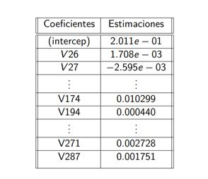

Descripción
Los análisis espectrométricos son métodos ampliamente utilizados en química analítica para determinar la concentración química de una muestra. Su aplicación abarca diversos campos, incluyendo la arqueología, donde es fundamental conocer la composición de elementos culturales. Sin embargo, los análisis químicos directos pueden resultar costosos y requieren una cantidad considerable de muestras. Por esta razón, se busca predecir la concentración de compuestos químicos utilizando la energía asociada a su frecuencia en los análisis espectrométricos.
No obstante, surge el desafío de disponer de un número limitado de muestras en comparación con la cantidad de predictores. Para superar esta limitación, se recurre a técnicas de regularización, en particular los métodos de regresión Ridge y Lasso. Estas técnicas permiten reducir la complejidad del modelo, disminuyendo la varianza y facilitando su interpretación. Como resultado, se logra una mejor predicción de la composición de vasijas arqueológicas en yacimientos, optimizando recursos y reduciendo costos.
Sumérgete en este proyecto y descubre cómo el análisis espectrométrico y la regularización pueden revelar valiosos conocimientos en el campo de la arqueología y la química analítica.
Tecnologias usadas
Lenguaje estadístico R
Descripción de los datos
Los datos utilizados están conformados por un marco de datos con 180
observaciones cada uno:
• Variable a predecir: compuesto químico Fe2O3 (Oxido de hierro) en cada vasija
• Variables predictoras: 301 variables, las cuales son el espectro de una vasija a la
que se le realizó espectrometría de rayos X , es decir, la energía
correspondiente a cada frecuencia j , j = 1, 2, · · · , 301:
V 1, V 2, · · · , V 301
Para realizar el trabajo hemos dividido los datos n = 180 ,de forma
aleatoria en datos de entrenamiento y datos de testeo, de la siguiente
manera:
Entrenamiento = 120
Testeo = 60
MSE Ridge y Lasso
En las siguientes imagenes mostramos:
1. Tabla de el Error Cuadrático medio MSE, al aplicar
las predicciones de los modelos con los datos de test y el mejor λ, es decir,
λmin
2.Ajuste de Modelo 1:Ajuste del Modelo 1: Debido a que Lasso seleccionó 67 variables
(V26, V27, V31, V32, V34, ..., V180, V183, ..., V300, V301), se eligieron los conjuntos de
entrenamiento y prueba correspondientes a esas variables. Luego, se ajustó un nuevo modelo (Modelo 1)
aplicando regresión lineal a los datos de entrenamiento. Para un nivel de significancia de p < 0.05,
se obtuvieron un total de 24 variables significativas.
3. Ajuste del Modelo 2: Se ajustó un nuevo modelo (Modelo 2) utilizando regresión lineal con las variables
seleccionadas por el Modelo 1. Para un nivel de significancia de p < 0.05, se obtuvieron un total de 19
variables significativas.
1. Comparación MSE Ridge, Lasso
2. Coeficientes Modelo 1

Anova Modelo 1 y Modelo 2, MSE entre modelos
En las siguientes imagenes mostramos:
1.Anova entre el Modelo 1 y Modelo 2, donde el Modelo 2 es un submodelo del Modelo 1,
considerando las siguientes hipótesis:
H0 : Ambos modelos ajustan los datos igualmente bien.
Ha : El modelo 1 ajusta mejor los datos
Según los resultados en la tabla adjunta, el estadístico F es 5.5079
y el valor p asociado es prácticamente cero. Por lo tanto, podemos rechazar H0 y concluir que el Modelo 1 ajusta mejor los datos.
2.Error Cuadrático Medio (MSE) al aplicar las predicciones de los modelos en los datos de prueba utilizando el valor λmín en las
regresiones Ridge y Lasso, así como en los modelos de regresión lineal Modelo 1 y Modelo 2.
1. Anova Modeo1 y Modelo2
2. Comparación MSE: Ridge, Lasso, Modelo 1 y Modelo 2
Anális de resultados
Una vez obtenidos los resultados de los modelos estudiados, podemos destacar lo siguiente:
• En cada uno de los modelos, al analizar los coeficientes, observamos que se incluyen los interceptos y los predictores
correspondientes a las medidas de análisis espectrométrico, como V 26, V 27, V 32, V 40, V 54, V 92, V 115, V 118, V 124,
V 134, V 149, V 150, V 159, V 167, V 168, V 171, V 173, V 174, V 194, V 243, V 271, V 272 y V 287.
• El método Ridge aproxima todos los coeficientes a cero, sin realizar una selección de predictores.
• En cambio, el método Lasso realiza una selección de 67 predictores, lo que resulta en un modelo más simple e interpretable.
• Al ajustar el Modelo 1 después de la selección de Lasso, obtenemos un total de 24 predictores de los 67 considerados anteriormente.
• Respecto al Modelo 2, podemos descartarlo debido al resultado del ANOVA realizado.
• Al comparar el error de prueba MSE entre los cuatro modelos anteriores, observamos que el menor MSE corresponde a la regularización Lasso,
seguido de la regularización Ridge y, posteriormente, el Modelo 1.
Conclusiones
• Tomando en cuenta lo anterior y los errores de prueba MSE, para lograr una mejor predicción del compuesto químico Óxido de Hierro,
recomendamos utilizar en primer lugar el modelo de regularización Lasso, el cual además proporciona una mejor interpretación debido
a la reducción en la cantidad de predictores. A continuación, con un ligero aumento en el MSE de prueba en comparación con Ridge,
recomendamos utilizar el Modelo 1.
• Con la regresión Lasso, a diferencia de la regresión Ridge, los coeficientes se contraen exactamente a cero, lo que nos brinda un
modelo con menos predictores y mayor interpretabilidad. Esto nos permite identificar las variables que tienen un mayor impacto en
la predicción del compuesto químico.
• Observamos que las técnicas estudiadas nos ofrecen perspectivas diferentes en términos del modelado de la variable de interés,
considerando los distintos predictores.
• Por último, es importante destacar la relevancia de la validación cruzada en las técnicas de regularización, ya que el parámetro de
penalización desempeña un papel fundamental en la obtención del menor MSE.
Bibliografía
Peter Bühlmann, Sara van de Geer, Statistics for High-dimensional Data Methods, Theory and Applications, Springer Heidelberg Dordrecht London, New York (2012).
Gareth James, Daniela Witten, Robert Tibshirani, Trevor Hastie, An Introduction to Statistical Learning with Applications in R, 2nd edition, Springer Verlag, New York (2013).
López Cruz, M. A., Aplicación del Elastic Net LASSO y modelos relacionados en selección genómica basados en marcadores moleculares (Master's thesis), (2012).
García S. Jasmin, Aplicaciones del modelo LASSO bayesiano en finanzas, (2011).
Lücken Giménez, José Ignacio von, Métodos de Regularización Lasso, Ridge y Elastic Net: Una aplicación a los seguros de no vida, (2021).
Trevor Hastie, Robert Tibshirani, Martin Wainwright, Statistical Learning with Sparsity The Lasso and Generalizations, Taylor & Francis Group, LLC CRC Press is an imprint of Taylor & Francis Group, an Informa business, Sound Parkway NW (2015).
George A. F. Seber, Alan J. Lee, An Introduction to Statistical Learning with Applications in R, 2nd edition, John Wiley & Sons, Inc., Hoboken, New Jersey (2003).
Brian S. Everitt, Torten Hothorn, A Handbook Statistical Analyses Using R, 2nd edition, Taylor & Francis Group, LLC CRC Press is an imprint of Taylor & Francis Group, an Informa business, Sound Parkway NW (2010).
Marvin H.J. Gruber, Improving Efficiency by Shrinkage The James-Stein and Ridge Regression Estimators, MARCEL DEKKER. INC, New York (1998).